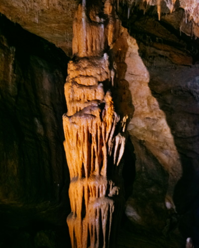

A Baradla-barlang leghosszabb, világítással ellátott szakasza 2300 méter hosszú. A túra a barlang vörös-tói bejáratától indul és a jósvafői kijáratánál végződik. A túra útvonala nagyrészt a Styx-patak medre mentén halad. Színpompás cseppkőoszlopok, zászló-, függő- illetve állócseppkövek között vezet az út, mely érinti Magyarország legmagasabb állócseppkövét, a 19 méter magas Csillagvizsgálót.
Közelről láthatunk egy Sárkányfejet is valamint a túra érinti a barlang legnagyobb termét, az Óriások termét, ahol a barlang akusztikájából lehet ízelítőt kapni.